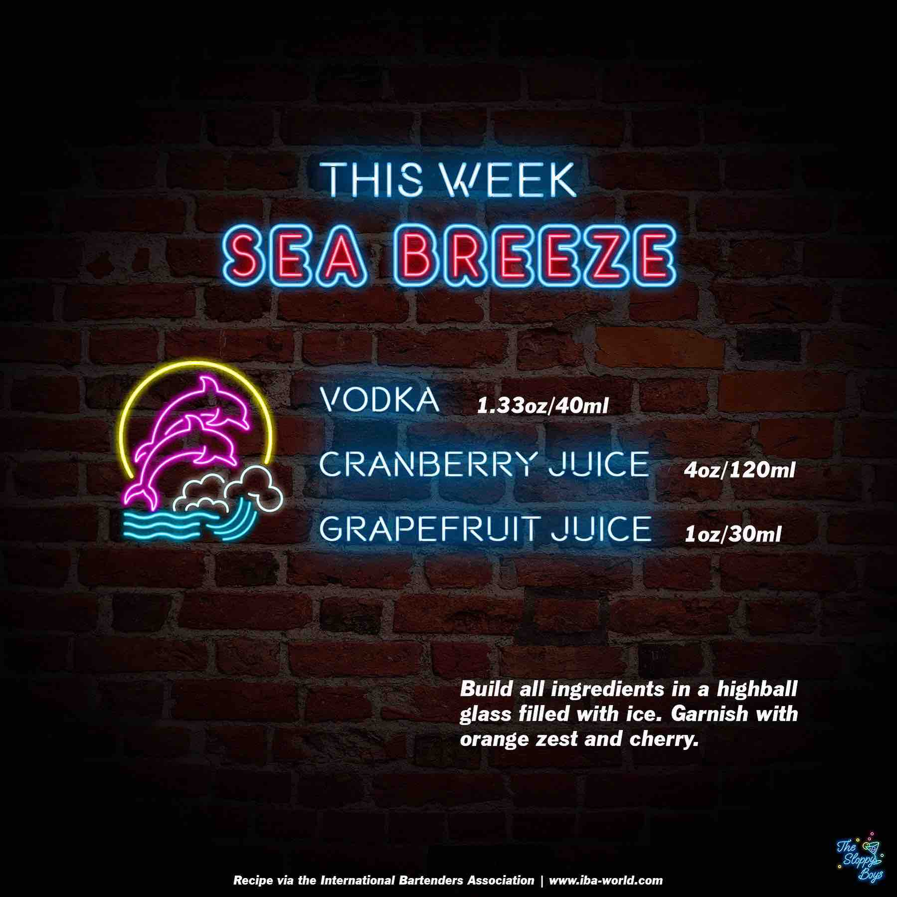

Sloppy Drinks
Podcast
About

Sea Breeze
Ingredients
Vodka (1.33oz/40ml)
Cranberry Juice (4oz/120ml)
Grapefruit Juice (1oz/30ml)
Steps
Build all ingredients in a highball glass filled with ice.
Garnish with orange zest and cherry.
Notes
Episode 94 - Sea Breeze (August 5, 2022)
IBA Sea Breeze Recipe
Artwork by The Sloppy Boys